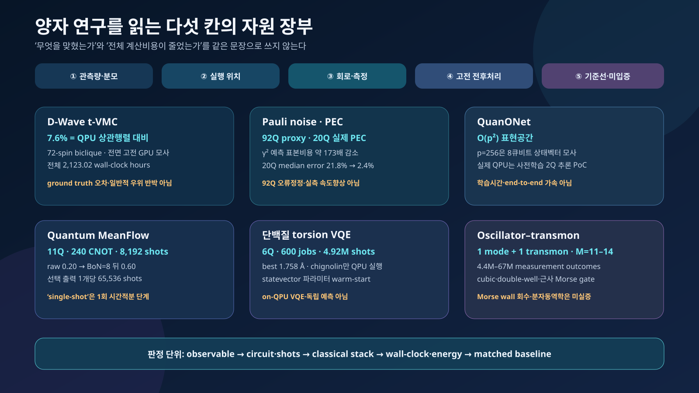

2026년 9월 4일의 양자 연구를 한 줄로 요약하면 “누가 더 빨랐는가”가 아니다. 무엇을 답으로 삼았고, 어느 비용까지 분모에 넣었으며, 계산의 어느 구간을 실제 양자장치에서 수행했는가가 이전보다 더 중요해졌다는 것이다.
이번에 함께 읽은 여섯 연구는 겉으로는 서로 멀리 떨어져 있다. 한 연구는 D-Wave annealer의 spin-glass 동역학을 고전 GPU로 모사했고, 다른 연구는 IBM 양자장치에서 식별 불가능한 Pauli noise의 gauge를 다뤘다. QuanONet은 quantum neural operator의 표현력 경계를 제시했고, Quantum MeanFlow는 생성모델의 순차 ODE 적분을 한 단계로 줄였다. 단백질 연구는 연속 torsion을 로그 규모 큐비트에 넣었고, superconducting harmonic oscillator–transmon 실험은 cubic·double-well·근사 Morse potential을 같은 장치에서 프로그래밍했다.
이 결과들을 “고전이 양자를 따라잡았다”, “양자 신경망이 고전 모델보다 우월하다”, “양자컴퓨터가 단백질을 접었다”, “분자 시뮬레이션이 구현됐다”로 묶으면 모두 틀리거나 불완전하다. 각 논문이 측정한 대상, 비교한 기준선, 제외한 비용과 실제 실행 위치가 다르기 때문이다. 반대로 이 차이를 정확히 남기면 여섯 연구는 하나의 공통 방향을 보여준다. 양자컴퓨팅은 단일 칩의 큐비트 수 경쟁에서 표현–제어–측정–오류완화–고전 전후처리를 함께 설계하는 시스템 경쟁으로 이동하고 있다.

그림 1. 이번 리뷰의 개념 일러스트. 양자장치와 GPU, 관측량과 자원 장부, 생성·분자·연속변수 응용을 하나의 검증 구조로 표현한다. 특정 칩 배선, 실험 데이터, 분자구조, potential 또는 성능 그래프를 재현한 그림은 아니다.
레이아웃을 검증한 5쪽 기술 브리프는 PDF로 내려받을 수 있다.
1. 같은 “양자 결과”라도 증거 단위가 다르다
양자 논문의 headline을 읽을 때 먼저 확인할 것은 큐비트 수가 아니다. 다음 네 질문이 우선한다.
- 관측량: energy, correlation, classification accuracy, RMSD, state fidelity 중 무엇을 맞췄는가?
- 분모: shots, 회로 수, 반복 횟수, GPU/QPU 시간, classical training·decoding 중 무엇을 비용에 넣었는가?
- 실행 경계: 학습·최적화·추론·sampling 가운데 어느 구간이 실제 QPU에서 일어났는가?
- 기준선: 같은 instance, 같은 정확도 목표, 같은 총예산에서 어떤 고전 방법과 비교했는가?
이 네 항목을 기준으로 이번 주 여섯 연구를 정리하면 다음과 같다.
| 연구 | 실제 실행 경계 | 확인된 최소 주장 | 비용·분모에서 함께 볼 항목 | 입증하지 않은 것 |
|---|---|---|---|---|
| D-Wave t-VMC | 전면 고전 GPU simulation; D-Wave QPU 상관행렬과 비교 | 72-spin precision-256 biclique의 최종 2점 상관행렬이 QPU reference 대비 상대 $L_2$ 오차 약 7.6% | 전체 실험 2,123.02 wall-clock hours, GPU 수·종류, 표본·sweep·solver 안정성, QPU access 비용 | ground-truth state의 7.6% 오차, $J=\pm1$ 최대난도 해결, 기존 우위 주장 전체의 반박 |
| self-consistent Pauli noise | 실제 IBM QPU; 92큐비트 proxy mitigation, 20큐비트 end-to-end PEC | gate set 전체를 함께 학습하면 gauge가 noisy prediction·완화 관측량을 바꾸지 않으며 gauge 선택 최적화로 예측 sampling overhead를 낮출 수 있음 | characterization circuits·shots, PEC norm과 leakage postselection, mitigation variance, calibration drift | 92큐비트 end-to-end PEC, 물리 오류의 제거, fault-tolerant QEC, 모든 잡음의 Pauli model 환원 |
| QuanONet | 이론·수치 benchmark와 미리 학습한 2큐비트 ibm_fez 추론 PoC |
density matrix가 implicit quadratic feature frame을 만들고 matched classical model의 $O(p)$ 대비 최대 $O(p^2)$ operator feature span을 제공 | data encoding, circuit compilation, shots, training time, classical optimizer | $O(p^2)$의 runtime speedup, 전체 PDE solver의 비용 우위, 일반적인 quantum advantage |
| Quantum MeanFlow | statevector 학습, IBM QPU 추론 | 다단계 ODE 적분을 one-step average velocity로 바꿔 sequential submission 수를 줄임 | 11Q·240 CNOT, 출력당 8,192 shots; BoN=8이면 65,536 shots와 고전 classifier | 한 번의 물리적 shot, 고전 생성모델 대비 우위, noisy-QPU 품질 보존 |
| torsion-space VQE | 고전 statevector 최적화 후 IBM QPU sampling | chignolin 44 torsion을 6Q로 표현; 600 jobs의 best-of-repeats 1.758 Å | 총 4,915,200 shots, circuit depth, CDF decoder, 좌표 복원·고전 energy optimization | 오류정정 logical qubit, on-QPU iterative VQE, 독립 단백질 예측, end-to-end 가속 |
| oscillator–transmon | 실제 superconducting oscillator 1 mode와 transmon 1개 | cubic phase, tunable double-well, band-limited approximate Morse의 non-Gaussian phase gate | $M=11$–14; potential별 4.4M–67M outcomes; tomography·reconstruction·calibration | coherent probe로 Morse wall 회수, 실제 분자 spectrum·동역학·반응속도 |

그림 2. 리뷰어가 구성한 다섯 칸의 자원 장부. 각 연구의 성능 순위가 아니라 관측량·분모, 실행 위치, 회로·측정, 고전 전후처리, 기준선·미입증 범위를 한 화면에서 대조한다.
함께 읽기: 시스템 병목에서 근거 장부로
9월 3일의 full-stack co-design 리뷰는 합성·상태준비·측정·라우팅·고전 후처리를 따라가며 최적화가 한 계층의 비용을 줄일 때 병목이 어디로 이동하는지를 물었다. 이번 글은 그 지도를 반복하지 않는다. 대신 다음 날의 여섯 연구를 이용해 이동한 병목을 어떤 observable과 분모로 측정할 것인지를 엄격하게 적는다. 9월 3일 글이 “전체 stack의 어디를 함께 설계할 것인가”를 묻는다면, 9월 4일 글은 “그 설계가 총비용을 실제로 줄였다고 판정할 장부는 무엇인가”를 제시한다.
2. D-Wave를 고전적으로 재현했다는 말의 정확한 범위
Roeland Wiersema의 Numerical simulation of D-Wave’s quantum advantage experiment with time-dependent variational Monte Carlo은 2026년 9월 1일 공개된 프리프린트다. 연구는 D-Wave Advantage2에서 다룬 frustrated transverse-field Ising annealing을 correlator-state 기반 time-dependent variational Monte Carlo(t-VMC)로 모사한다. 대상은 2D cylinder, 3D dimer, diamond, biclique의 네 graph family이며 anneal time은 7 ns와 20 ns다.
이 논문의 중요한 선택은 “파동함수 전체를 얼마나 정확히 복원했는가”가 아니라 최종 2점 상관행렬이 QPU 결과에 얼마나 가까운가를 보는 것이다. ansatz 크기를 체계적으로 늘리면 이 오차가 QPU 수준에 접근했고, 360개 결합과 최대 차수 14를 가진 72-spin biclique에서도 가까운 일치를 얻었다. 약 7.6%는 모든 $i>j$에 대해 계산한 상관행렬의 상대 $L_2$ 오차이며 reference는 QPU 상관행렬이다. 이 규모에는 수렴한 MPS ground truth가 없다. 따라서 이 수치는 전체 양자상태 fidelity, 정확한 해와의 오차 또는 모든 고차 상관관계의 오차가 아니다. 해당 72-spin 문제의 결합도 precision-256 값이며 더 까다로운 bimodal $J=\pm1$ instance가 아니다.
결과는 고전 모사의 가능성과 비용을 동시에 드러낸다. 논문이 표로 합산한 run별 wall-clock은 2,123.02시간이다. 이것은 GPU 장치 수를 곱한 GPU-hours가 아니다. 각 run은 A100 4개 또는 H200 8개를 사용했고, 가장 비싼 단일 run은 H200 8개에서 109.25시간이 걸렸다. annealer의 물리적 anneal time과 이 campaign 시간을 바로 나란히 놓아 “속도”를 판정해서도 안 된다. QPU에는 programming, readout, repetition, queue와 access overhead가 있고, 고전 쪽에는 hyperparameter 탐색과 실패한 run, Markov-chain sample 및 numerical stabilization 비용이 있다. 의미 있는 비교는 같은 instance에서 목표 correlation error를 고정하고 양쪽의 준비·반복·후처리까지 합친 시간과 에너지를 기록해야 한다.
논문은 고전 계산의 실패 원인도 숨기지 않는다. poor Markov-chain mixing, high-variance local-energy estimator, stochastic Runge–Kutta error estimate가 불안정을 만들었고, parallel tempering, blurred sampling, importance-weighted differential-equation solver가 이를 완화했다. 즉 “일반적인 VMC가 간단히 D-Wave를 모사했다”기보다 문제 구조에 맞춘 ansatz와 sampling·적분 기법을 함께 설계해 특정 observable을 재현했다가 정확하다.
이 결과가 기존 quantum-advantage 주장을 전면 무효화하지는 않는다. 더 큰 규모와 어려운 ±1 instance, 다른 observable, 전체 분포, 고차 상관관계에서는 비용 곡선이 달라질 수 있다. 반대로 “고전 모사는 불가능하다”는 문장도 유지하기 어렵다. 응용 연구자가 가져갈 교훈은 승패가 아니라 benchmark discipline이다. 분자 선택이나 물류 최적화를 QUBO로 옮긴다면 exact solver, MILP/CP-SAT, simulated annealing, tensor-network 또는 Monte Carlo 방법을 같은 instance와 종료조건에서 고정하고, best objective 하나가 아니라 solution distribution과 time-to-target을 비교해야 한다.
3. 식별할 수 없는 잡음이 언제 문제가 되지 않는가
Edward H. Chen, Senrui Chen, Laurin E. Fischer 등 연구진의 Disambiguating Pauli Noise in Quantum Computers은 2026년 9월 3일 PRX Quantum에 게재된 동료평가 논문이다. 실제 IBM 양자프로세서에서 최대 92큐비트 실험을 수행했다.
잡음 특성화에는 근본적인 식별 불가능성이 있다. state preparation, gate와 measurement에 생긴 오류 일부는 실험 데이터만으로 서로 유일하게 분리할 수 없다. 서로 다른 parameter set이 같은 관측 통계를 낼 수 있는데, 이 자유도를 gauge라고 부른다. 표면적으로는 “noise model을 하나로 정하지 못하니 그 model을 이용한 예측과 오류완화도 믿을 수 없다”는 문제가 생긴다.
논문의 답은 self-consistency다. state preparation, measurement, 1큐비트 gate와 multi-qubit entangling Clifford gate를 따로 떼어 임의의 이상적 구성요소를 가정하지 않고, 완전한 gate set의 learnable parameter를 함께 특성화하면 unlearnable gauge degree of freedom이 noisy dynamics의 예측이나 error-mitigated observable을 바꾸지 않는다는 것을 이론과 실험으로 보였다. 더 나아가 물리적으로 같은 관측값을 주는 gauge 가운데 sampling overhead가 작은 표현을 선택할 수 있다.
규모별 실험의 역할은 구분해야 한다. ibm_strasbourg의 최대 21큐비트 GHZ와 92큐비트 ring은 고전적으로 계산 가능한 Clifford 회로의 prediction ratio를 이용한 proxy mitigation이다. 92개 국소 $Z_i$ 관측량의 median error는 4.9%에서 3.1%로 줄었다. 실제 randomized PEC를 끝까지 수행한 실험은 ibm_fez의 20큐비트 non-Clifford 회로다. 모델마다 100,000개 randomized circuit instance를 한 shot씩 실행했고 leakage postselection 뒤 약 18%만 남았다. unmitigated median absolute error 21.8%는 inconsistent PEC에서 5.6%, gauge-optimized consistent PEC에서 2.4%로 줄었다.
같은 20큐비트 실험에서 PEC norm $\gamma$는 inconsistent model 6.74, default-gauge consistent model 48.68, optimized consistent model 3.7이었다. 표본비용 proxy인 $\gamma^2$로 보면 default consistent gauge 대비 optimized gauge가 약 173배 작다. 이것은 173배의 실측 속도향상이나 실제 shots 절감을 직접 측정한 값이 아니라, 같은 PEC 추정 정밀도에 필요한 예측 sampling overhead의 감소다.
여기서 “gauge가 무관하다”와 “gauge를 최적화한다”는 말은 모순이 아니다. self-consistent하게 계산한 최종 observable은 gauge-invariant지만, probabilistic error cancellation과 같은 구현에서 쓰이는 decomposition의 coefficient 크기와 그에 따른 분산·표본비용은 표현 선택에 따라 달라질 수 있다. 정답은 같아도 정답을 추정하는 비용이 달라진다.
이것은 오류정정 실증이 아니다. 물리 오류를 검출·수정하는 logical qubit을 만들지 않았고, 임의의 비-Pauli 또는 강한 non-Markovian noise까지 해결했다는 뜻도 아니다. 정확한 실무 문장은 다음과 같다. 모델의 모든 parameter를 유일하게 식별하지 못해도, self-consistent하게 학습한 범위에서는 유용한 noisy prediction과 mitigation이 가능하며 gauge를 비용 최적화 변수로 사용할 수 있다.
가까운 활용처는 명확하다. 오류완화 실험은 mitigation 전후의 absolute error만 보고하지 말고 noise characterization shots, sampling amplification, calibration 시점, drift와 최종 유효 표본 수를 함께 남겨야 한다. OLED·재료의 VQE나 SQD에서도 energy error가 작아진 만큼 PEC/ZNE의 variance와 QPU allowance가 늘었다면 순이득은 별도로 계산해야 한다. 이 논문은 “식별 가능성”이라는 이론적 문제를 “같은 observable을 더 적은 shots로 추정할 수 있는 표현 선택”이라는 운영 문제로 바꿨다는 데 가치가 있다.
4. QuanONet의 $O(p^2)$는 속도가 아니라 표현력 경계다
Ruocheng Wang, Xiaoqiu Zhong, Zhuo Xia, Junchi Yan의 Quantum neural operators with implicit quadratic frame and expressivity advantages은 2026년 9월 3일 Nature Machine Intelligence에 게재됐다. 이 연구가 제안한 QuanONet은 함수에서 함수로의 사상, 즉 differential equation의 solution operator를 근사하는 quantum neural operator다.
핵심 이론은 exponential Hilbert space라는 막연한 설명과 다르다. architecture의 density matrix가 입력 feature에 대한 implicit quadratic frame을 만들며, operator approximation에서 matched classical model의 $O(p)$ linear capacity에 비해 최대 $O(p^2)$ feature span을 제공한다. 여기서 $p$는 sampling location 또는 latent representation의 차원이지 큐비트 수가 아니다. pair-product feature가 선형독립일 때 quadratic scaling에 도달하며, 보충자료의 Sidon-spectrum 예에서는 coverage가 $O(p^{3/2})$로 낮아진다. 논문은 continuous nonlinear operator에 대한 universal approximation result도 양자 영역으로 확장한다.
이 결과의 정확한 주장은 같은 방식으로 맞춘 고전 모델과 비교한 특정 architecture class의 표현 용량 경계다. $O(p^2)$가 $O(p)$보다 크다는 사실만으로 학습시간, inference latency, 필요한 데이터, shots 또는 에너지가 줄어들지는 않는다. density matrix의 유용한 항을 읽으려면 측정이 필요하고, classical data를 encoding하는 비용과 parameter optimization도 남는다. 더 큰 function space를 표현할 수 있다는 것과 그 안에서 좋은 해를 효율적으로 찾는다는 것은 별개의 명제다.
ibm_fez 실제 장치 실행은 hardware feasibility를 보여주는 정성적 proof of concept로 읽는 것이 맞다. 미리 학습한 2큐비트 model로 antiderivative 문제의 100개 출력 좌표를 추론했고 공개 script의 Estimator 기본값은 10,000 shots다. QPU에서 학습한 것이 아니다. noise-free simulation과 실제 장치의 비교 및 compilation 정보가 제시됐지만, quantum system이 전체 PDE workflow에서 경쟁 고전 neural operator보다 빠르거나 적은 에너지를 썼다는 end-to-end benchmark는 아니다. 공개 구현에서 $p=2^n$이므로 $p=256$ scaling은 256큐비트가 아니라 8큐비트 statevector simulation이다. 이 scaling 실험과 별도의 strict parameter-matched 비교를 하나의 hardware 결과처럼 합쳐서는 안 된다.
그럼에도 연구 방향은 중요하다. QML의 설득력 있는 질문이 “Hilbert space가 지수적으로 크다”에서 “어떤 feature interaction을 어떤 회로와 measurement로 싸게 얻는가”로 이동하기 때문이다. 다음 실험에서는 classical polynomial-feature model, kernel method, DeepONet/FNO 계열과 parameter count뿐 아니라 data preprocessing, circuit depth, measurement setting, shots, training wall-clock을 맞춰야 한다. 실제 장치에서는 동일 데이터 split과 seed를 유지하고 simulator–QPU gap, calibration 간 분산과 error mitigation 비용을 공개해야 한다.
5. Quantum MeanFlow의 ‘한 단계’는 어디까지 한 단계인가
Ashish Joshi, Eshaan Mistry, Takahiko Koyama의 Quantum MeanFlow: single-shot generative sampling on NISQ hardware은 2026년 9월 2일 공개된 프리프린트다. Flow matching은 단순 분포를 target distribution으로 옮기는 velocity field를 학습한 뒤 inference에서 ODE를 적분한다. 기존 Quantum Flow Matching(QFM)은 여러 time step이 순차 의존하기 때문에 QPU submission과 입출력 overhead가 누적된다. Quantum MeanFlow(QMF)는 순간 velocity 대신 구간 평균 velocity를 학습해 이 적분을 한 단계로 바꾼다.
“single-shot”을 물리적 shot 한 번으로 읽으면 안 된다. QMF의 one step은 하나의 ODE integration step 또는 한 번의 model evaluation 단계라는 algorithmic 의미다. 실제 구현은 결과를 복원하기 위해 X·Z 두 measurement basis를 사용하고 basis마다 4,096 shots를 쓴다. QMF 이미지 한 장에 8,192 shots, BoN=8까지 포함하면 65,536 shots가 필요하다. 11큐비트, 24층, 층당 10 CNOT인 QMF 회로는 총 240 CNOT과 792 trainable parameter를 포함한다. 따라서 one-step이라는 좋은 구조적 성질과 deep noisy circuit의 측정비용은 동시에 존재한다.
또 하나의 실행 경계는 학습 위치다. 약 $2.2\times10^5$ parameter의 고전 autoencoder로 16×16 MNIST를 32차원 latent에 압축하고, QMF·QFM parameter는 statevector/simulator에서 학습했다. IBM Heron 장치인 ibm_pittsburgh와 ibm_boston에서는 고정된 parameter로 inference를 수행했다. 즉 QPU가 전체 생성 pipeline을 학습한 것이 아니라, classical encoding과 simulator training 뒤의 quantum inference block을 실행했다.
결과도 분해해서 읽어야 한다. statevector에서 60-step Heun QFM의 정확도는 0.85, one-step QMF는 0.63이었고, 연구진이 학습한 classifier feature space에서 2,000개 표본으로 계산한 FID는 QFM 10.62, QMF 28.26으로 QMF 품질이 낮았다. ibm_boston의 raw accuracy는 QFM 0.30, QMF 0.20이었다. best-of-$N$(BoN) rejection sampling에서 $N=8$을 쓰자 각각 0.80과 0.60으로 회복됐다. 그러나 이는 후보를 여덟 배 생성한 뒤 test accuracy 98.2%인 고전 classifier가 가장 좋은 후보를 선택한 결과다. 같은 classifier가 선택과 평가에 관여해 독립적인 downstream validation으로 보기도 어렵다. 회로를 바꾸지 않고 noise loss를 완화한다는 장점이 있지만, 생성비용·shots·classifier 비용도 여덟 배 반복 구조에 포함해야 한다.
따라서 이 연구가 입증한 것은 sequential ODE submissions를 줄이는 architecture trade-off와 noisy-hardware inference의 가능성이다. 고전 diffusion/flow model 대비 품질이나 총시간 우위, QPU 자체의 학습 가속, one-shot physical generation은 입증하지 않았다. 다음 방향은 단순하다. integration step 수뿐 아니라 basis 수 × shots × BoN × 회로 depth × queue/latency를 한 항으로 계산하고, 같은 latent·classifier·acceptance rule을 쓴 고전 MeanFlow와 비교해야 한다. QMF가 짧은 workflow 덕분에 유리한지는 이 총비용에서 판정해야 한다.
6. 로그 큐비트 단백질 VQE는 비용을 없애지 않고 이동시킨다
Fabio Cumbo 등 연구진의 Logarithmic-scale variational quantum eigensolver for off-lattice protein structure prediction in continuous torsional angle space은 2026년 9월 2일 공개된 프리프린트다. lattice에 단백질을 억지로 올리는 대신 연속 torsional degree of freedom을 phase에 encoding해 필요한 qubit 수를 $O(\log_2 N)$으로 낮추고, classical algorithm이 torsion에서 heavy-atom coordinate를 복원한다.
statevector 단계에서는 relative phase로 torsion을 읽지만 hardware에서는 computational-basis probability의 empirical cumulative distribution function(CDF)을 bounded torsion variable에 매핑한다. EfficientSU2 ansatz와 multi-stage relaxation을 사용하고, 구조 평가는 custom molecular-mechanics, Rosetta 또는 OpenMM scoring backend에 의존한다. Rosetta와 OpenMM은 독립적인 folding pipeline 기준선이 아니라 QTF 내부의 energy function이다. 그러므로 “큐비트 수가 로그 규모”라는 표현은 맞지만, 물리 정보를 읽는 shots와 깊은 circuit, 고전 좌표 복원·energy evaluation 비용이 사라졌다는 뜻은 아니다.
고전 statevector optimization에서 chignolin은 retained snapshot Cα RMSD 0.623 Å, final model 1.199 Å를 기록했고, Trp-cage는 각각 2.501 Å와 3.512 Å였다. 0.623 Å는 두 단백질에 걸친 7.33 million retained snapshots 가운데 알려진 PDB 구조를 기준으로 사후 선택한 extreme best이며, energy function이 최종 선택한 평균 성능이 아니다. Trp-cage에서는 2 Å 미만 snapshot이 없었다.
hardware 실험은 chignolin의 6큐비트 회로만 156큐비트 Heron R2 ibm_cleveland와 120큐비트 Nighthawk R1 ibm_miami에서 실행했다. 여기서 6큐비트는 회로 변수의 폭이며 오류정정된 logical qubit 6개가 아니다. 장치마다 300 jobs, job당 8,192 shots, 합계 600 jobs·4,915,200 shots를 사용했다. best-of-repeats RMSD는 Cleveland 1.758 Å, Miami 1.782 Å였고 2 Å 미만 native-like sample은 각각 88/300과 45/300 jobs에서 나왔다. 이 RMSD는 terminal residue를 제외한 structure core 기준이다. Cleveland의 transpiled CZ 중앙값은 204개이고 QPU time은 job당 약 5초였지만, Miami는 CZ 60개인데도 약 35초가 걸렸다. 더 적은 2Q gate가 곧 더 짧은 처리시간이나 더 좋은 회수율을 뜻하지 않는 사례다.
가장 중요한 경계는 parameter optimization이다. 실제 QPU run은 세 energy function마다 simulation에서 RMSD가 낮았던 chignolin final model 10개, 모두 30개 회로를 고른 뒤 각각 10회 반복한 parameter-transfer sampling이다. hardware loop 안에서 energy를 측정하고 parameter를 갱신한 on-QPU VQE가 아니다. warm-start RMSD 자체가 1.199–2.270 Å였고, 대다수 hardware 반복은 이 시작점보다 나빠졌다. “양자컴퓨터가 단백질 구조를 처음부터 최적화했다”는 설명은 과장이다. 또한 이 Hamiltonian은 torsional conformer의 hybrid score를 다루며 전자 Hamiltonian의 ground state를 구한 electronic-structure VQE가 아니다.
응용 가능성은 benchmark 가설로 남아 있다. OLED donor–acceptor 분자의 6–12개 주요 torsion이나 고분자 backbone의 저차원 conformer를 compact encoding으로 탐색할 수 있다. 다만 RDKit/CREST, molecular dynamics, basin hopping, learned potential과 동일한 conformer family·energy function·budget에서 비교해야 한다. qubit 절약으로 늘어난 circuit depth, shots와 decoder sensitivity를 모두 포함했을 때 더 좋은 low-energy conformer를 더 빨리 찾는지가 기준이다. 현재 결과는 그 질문을 시험할 하드웨어 protocol을 제시했지만 답을 확정하지 않았다.
7. oscillator–transmon은 분자를 푼 것이 아니라 potential을 프로그래밍했다
Clara Yun Fontaine 등 12명의 Programming anharmonic potentials in a superconducting harmonic oscillator은 2026년 9월 2일 공개된 프리프린트다. long-lived superconducting harmonic oscillator를 transmon qubit에 dispersive coupling하고, bosonic quantum signal processing에서 유도한 modular circuit로 non-Gaussian phase gate $e^{-iV(\hat X)}$를 구현한다. 고정된 calibrated control unitary 사이의 qubit rotation angle만 바꿔 한 장치에서 여러 $V(X)$를 프로그래밍한다.
harmonic oscillator만으로 쉽게 만드는 Gaussian operation은 universal continuous-variable processing에 충분하지 않다. cubic phase와 같은 비선형 potential은 non-Gaussian resource를 제공한다. 이 실험은 cubic $V(X)=0.6X^3$, 대칭·비대칭 double-well, 근사 Morse potential을 순서대로 구현했다. elementary echoed conditional displacement gate는 약 520 ns, qubit rotation은 28 ns이고, 사용한 Fourier order는 대략 11–14다. cubic gate에서는 재구성한 coefficient $c_3=0.68\pm0.10$, state fidelity 하한 0.84, Wigner negativity 하한 0.11을 보고했다. 반복 적용에서도 non-Gaussianity가 누적되는 경향을 확인했다.
double-well에서는 linear bias를 조절해 대칭성과 well-depth difference를 바꿨고, 재구성 및 bootstrap 검정으로 topology가 유지되는지를 확인했다. 그러나 측정비용은 작지 않았다. potential별 총 measurement outcome은 cubic·symmetric double-well·broken double-well이 각각 약 $4.4\times10^6$, asymmetric double-well이 $5.3\times10^7$, Morse가 $6.7\times10^7$이었다.
Morse gate는 분자 진동 potential의 exponential 형태를 향한 근사 구현으로 제시됐다. 실제 coherent probe에서는 $|n|\le2$ harmonic만 안정적으로 복원돼 steep repulsive wall이 충분히 나타나지 않았다. 10.9 dB squeezed probe로 $|n|\le7$까지 wall을 회수한 결과는 simulation이며, 완전한 $M=13$ 복원에는 계산상 16.3 dB squeezing과 29 probe position이 필요하다. 또한 데이터 수집 뒤 complementary polynomial 구성의 $\pi$ 인자 누락이 확인됐다. 논문은 실행된 회로 자체를 기준으로 결과를 다시 비교했으므로 topology와 asymmetry 관찰은 남지만, intended potential을 높은 정밀도로 그대로 구현했다고 표현해서는 안 된다.
중요한 단어는 근사와 potential gate다. 실제 분자의 parameter를 넣어 vibrational spectrum을 계산하거나 chemical reaction rate·tunnelling yield를 예측한 것이 아니다. potential을 impulsive phase로 작용시킨 구성요소와 그 pointwise force reconstruction을 실증한 단계다.
이 결과의 가까운 개발 방향은 두 갈래다. 첫째, 더 긴 coherence와 짧은 modular sequence, robust calibration으로 높은 Fourier order의 누적오차를 줄인다. 둘째, potential gate만 따로 평가하지 않고 kinetic evolution과 결합해 known spectrum·wavepacket dynamics를 재현하는 end-to-end analog benchmark로 이동한다. 분자 응용을 주장하려면 Morse oscillator의 낮은 고유준위, tunnelling splitting, time-correlation function처럼 고전 수치해가 정밀한 작은 문제부터 blind comparison을 해야 한다.
8. 여섯 연구가 함께 가리키는 개발 방향
8.1 큐비트 수보다 계산 경계를 먼저 설계한다
QMF와 단백질 VQE는 양자 block의 호출 횟수나 qubit 수를 줄였지만 비용을 다른 곳으로 옮겼다. QMF는 sequential step을 줄이는 대신 깊은 회로, 두 measurement basis와 BoN을 남긴다. torsion encoding은 qubit를 줄이는 대신 phase information을 probability distribution에서 복원해야 한다. 좋은 co-design은 한 자원만 최소화하지 않는다. encoding, ansatz, measurement와 classical decoder를 묶어 total error와 total time의 Pareto front를 그려야 한다.
8.2 오류모형은 정답뿐 아니라 표본비용을 결정한다
Pauli-noise 연구는 gauge가 최종 observable에 영향을 주지 않아도 sampling overhead에는 영향을 줄 수 있음을 보였다. 이는 device calibration을 단순한 사전 점검이 아니라 compiler와 mitigation의 objective로 사용할 수 있다는 뜻이다. 어느 qubit·coupler를 쓰고, 어떤 Pauli frame과 decomposition을 선택하며, 어느 observable에 shots를 더 줄지를 한 최적화 문제로 다룰 수 있다.
8.3 표현력 정리와 응용 가속을 분리한다
QuanONet의 quadratic frame은 유의미한 이론 결과다. 그러나 실제 응용에서 유용하려면 더 적은 parameter로 같은 error를 얻는지, 같은 시간에 더 정확한 operator를 배우는지, 또는 같은 정확도에서 measurement cost가 줄어드는지로 번역해야 한다. theorem, simulator benchmark, device PoC, end-to-end advantage를 네 단계로 분리해 보고하면 한 단계의 성공이 다음 단계를 자동으로 보증하는 오류를 피할 수 있다.
8.4 응용은 검증 가능한 작은 물리량부터 시작한다
단백질의 전체 folding이나 분자 반응 전체를 한 번에 목표로 잡으면 classical preprocessing과 heuristic score가 결과를 얼마나 결정했는지 알기 어렵다. torsion study는 fixed decoder와 energy function에서 sample recovery를, oscillator–transmon은 known anharmonic potential의 재구성을 먼저 시험했다. 재료·OLED에서는 작은 active space energy, 제한된 torsion family, known vibrational level, 특정 correlation function처럼 고전 기준선이 강한 물리량에서 quantum block의 순기여를 측정하는 편이 낫다.
9. 양자–고전 자원 장부의 최소 형식
이번 여섯 논문을 같은 장부에 넣기 위해서는 적어도 아래 항목이 필요하다. 한두 개가 비어 있으면 “양자” 또는 “고전”의 비용이 보이지 않는 구간이 생긴다.
| 장부 항목 | 반드시 기록할 내용 | 빠질 때 생기는 오해 |
|---|---|---|
| 문제와 instance | graph·분자·데이터 split, 규모, 난도 분포 | 쉬운 instance만 고른 결과를 일반화 |
| 목표 observable | energy, correlation order, accuracy, RMSD, fidelity, spectrum | 서로 다른 답을 같은 정확도처럼 비교 |
| 성공 기준 | target error, confidence interval, valid-sample 조건 | best run 하나를 평균 성능으로 오인 |
| 양자 실행 경계 | training, optimization, inference, sampling 중 QPU 구간 | hybrid pipeline 전체를 QPU 계산으로 오인 |
| 회로 자원 | logical/physical qubit, 2Q gate, depth, basis, circuit count | 큐비트 절약이 깊이 증가를 감춤 |
| 측정 자원 | shots/basis, repetitions, postselection, BoN, 유효 표본 | noise 완화·선택 비용이 사라짐 |
| 고전 자원 | encoding, optimizer, decoder, CI/DFT/MD, GPU/CPU time·memory | quantum subroutine만 시간을 보고함 |
| 운영 자원 | compile, queue, calibration, QPU access, wall-clock, energy | anneal time과 GPU 총시간을 직접 비교 |
| 기준선 | 같은 instance·budget·stopping rule의 최고 고전 방법 | 약한 baseline에 대한 개선을 우위로 확대 |
| 반복성 | seeds, calibration dates, 실패 run, uncertainty | 선택된 성공 사례를 안정적 성능으로 오인 |
OLED·재료 계산에 적용하면 표는 더 구체적이어야 한다. target overlap, active-space 정의, state-preparation cost, compiled 2Q depth, commuting group 수, shots, mitigation amplification, postselection yield, QPU time, classical CI/DFT time과 메모리를 한 행에 둔다. 최적화 문제라면 encoding penalty, feasible-shot rate, time-to-best, optimality gap과 classical solver의 termination condition을 추가한다. 생성모델이라면 FID나 classifier accuracy뿐 아니라 후보 수, rejection rate, scoring model과 selection compute를 기록한다.
10. 지금 실행할 수 있는 세 가지 검증 실험
첫째, D-Wave 또는 QAOA benchmark를 observable-matched 방식으로 다시 설계한다. 같은 Ising/QUBO instance에서 objective만 보지 말고 2점·고차 correlation과 sample diversity를 정한다. exact method가 가능한 작은 규모, tensor/Monte Carlo가 경쟁하는 중간 규모, QPU만 가능한 주장 규모를 나누고 time-to-target과 energy-to-target을 보고한다.
둘째, QML PoC에 end-to-end denominator를 붙인다. QuanONet과 QMF 모두 classical encoding·training·selection을 포함한 pipeline graph를 공개하고, quantum block을 동일 크기의 classical quadratic feature 또는 MeanFlow block으로 교체한 ablation을 둔다. QPU calibration 세 번 이상에서 shots-to-accuracy와 wall-clock-to-accuracy를 비교한다.
셋째, 분자·재료 응용은 decoder와 물리 solver를 분리 평가한다. torsion encoding에서는 정확한 phase/statevector를 넣었을 때 decoder error, noisy distribution을 넣었을 때 추가 error, classical energy function이 만드는 ranking error를 따로 잰다. oscillator–transmon에서는 potential reconstruction 뒤 known eigenvalue와 dynamical observable까지 이어지는 benchmark를 추가한다. 이렇게 해야 양자 state preparation, measurement와 classical reconstruction 중 어디가 병목인지 보인다.
11. 이번 동향을 활용 방향별로 정리하면
- 가장 가까운 운영 활용: self-consistent Pauli-noise learning과 gauge optimization. 장치 특성화·오류완화의 sampling overhead를 줄이는 직접적인 engineering 문제다.
- 가까운 연구용 활용: t-VMC를 포함한 강한 고전 모사를 quantum-advantage benchmark의 대조군으로 사용한다. 양자장치를 대체한다기보다 주장 가능한 영역을 더 정확히 정한다.
- 중기 QML 활용: QuanONet의 quadratic frame과 QMF의 one-step inference를 측정비용까지 포함해 시험한다. 현재는 architecture·PoC 단계다.
- 중기 분자·생물물리 활용: compact torsion representation과 bosonic anharmonic gate를 작은 conformer·vibrational benchmark에 연결한다. 단백질 folding이나 화학반응의 전체 가속으로 확대하기에는 이르다.
- 장기 방향: error-corrected gate model, bosonic mode와 고성능 classical simulation을 문제별로 조합하는 heterogeneous stack. 어느 한 플랫폼이 모든 계산을 맡기보다 잘 정의된 observable마다 가장 싼 계산층을 선택하는 방향이다.
결론
이번 주 연구는 양자와 고전의 승패를 확정하지 않았다. 대신 승패를 말하려면 무엇을 세어야 하는지를 더 분명하게 만들었다. t-VMC는 D-Wave의 선택된 correlation을 큰 GPU 비용으로 재현해 고전 기준선을 끌어올렸다. self-consistent Pauli-noise learning은 식별 불가능성이 곧 예측 불가능성을 뜻하지 않으며, 같은 정답을 더 적은 표본으로 얻는 gauge 선택이 가능함을 보였다. QuanONet은 표현력의 이론적 근거를, QMF는 sequential inference를 줄이는 구조를 제시했다. torsion VQE와 oscillator–transmon은 각각 compact encoding과 programmable non-Gaussian potential이라는 구성요소를 실제 장치에 올렸다.
그러나 어느 결과도 보편적인 quantum advantage, 전체 응용 workflow의 가속, 실제 분자 반응의 계산을 입증하지 않았다. 그 한계를 적는 것은 연구를 깎아내리는 일이 아니다. 어떤 구성요소가 이미 작동하고 무엇이 다음 검증 대상인지 분리해야 연구개발 자원이 올바른 병목에 투입된다.
앞으로의 핵심 지표는 큐비트 수 하나가 아니다. 관측량의 적합성, 비교 분모의 완전성, 실행 경계의 투명성, 그리고 같은 예산의 강한 고전 기준선이 함께 있어야 한다. 양자 우위의 경계는 계속 다시 그려질 것이다. 좋은 리뷰와 좋은 실험은 그 경계선을 넓게 그리는 대신, 어느 좌표에서 어떤 비용으로 확인했는지를 남긴다.
References
- R. Wiersema, “Numerical simulation of D-Wave’s quantum advantage experiment with time-dependent variational Monte Carlo,” arXiv:2609.01719v1 (1 September 2026). 프리프린트; 고전 GPU simulation. 코드
- E. H. Chen, S. Chen, L. E. Fischer et al., “Disambiguating Pauli Noise in Quantum Computers,” PRX Quantum 7, 033045 (3 September 2026). 동료평가 논문; 실제 IBM QPU, 최대 92큐비트.
- R. Wang, X. Zhong, Z. Xia, J. Yan, “Quantum neural operators with implicit quadratic frame and expressivity advantages,” Nature Machine Intelligence (3 September 2026). 동료평가 논문;
ibm_fez정성적 PoC. 코드 - A. Joshi, E. Mistry, T. Koyama, “Quantum MeanFlow: single-shot generative sampling on NISQ hardware,” arXiv:2609.02186v1 (2 September 2026). 프리프린트; simulator 학습과 실제 IBM QPU 추론.
- F. Cumbo, B. Raubenolt, V. Puram, N. Katzenmeyer, J. Joshi, D. Blankenberg, “Logarithmic-scale variational quantum eigensolver for off-lattice protein structure prediction in continuous torsional angle space,” arXiv:2609.02113v1 (2 September 2026). 프리프린트; 실제 QPU sampling, on-QPU optimization 아님. 코드 · 데이터
- C. Y. Fontaine, M. Somani, K. Yu et al., “Programming anharmonic potentials in a superconducting harmonic oscillator,” arXiv:2609.02405v1 (2 September 2026). 프리프린트; 실제 superconducting oscillator–transmon 장치.
작성정보. 책임 편집: 김현중. AI 보조: OpenAI Codex Work Mode multi-agent workflow. 검증 기준일: 2026년 9월 4일. evidence_algorithms가 t-VMC·Pauli-noise·QuanONet을, evidence_applications가 Quantum MeanFlow·torsion-space VQE·oscillator–transmon을 원 출처에서 점검했고, draft_sep4_review가 한·영 원고를 구성했다. 수치와 방법은 원문 보고값이며, OLED·재료 적용, 공통 자원 장부와 세 가지 검증 실험은 리뷰 제안이다. 동료평가 논문 2편과 프리프린트 4편을 구분했고, 실제 QPU·고전 simulation·simulator training·classical decoding의 경계를 따로 표시했다.